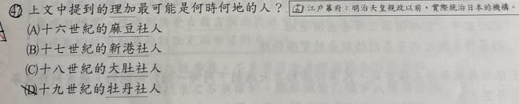
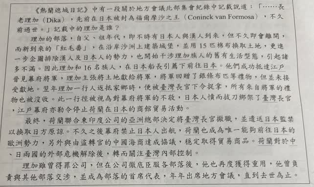

分享原卷｜第47題
完整原題
作答所需文章／材料
《熱蘭遮城日記》中有一段關於地方會議北部集會紀錄中記載說道：「……長老理加（Dika），先前在日本被封為福爾摩沙之王（Coninck van Formosa），不久前過世。」記載中的理加是誰？ 理加的部落，自父、祖年代，即不時有日本人與漢人到來，但不久即會離開，而新到來的「紅毛番」，在沿岸沙洲上建築城堡，並用15匹棉布換取土地，更進一步企圖排除漢人及日本人的勢力，也開始干涉理加族人的舊有生活型態，引起諸多不滿。因此理加和16名族人，在日本船長引薦下前往日本。他們成功抵達江戶晉見幕府將軍，理加主張將土地獻給將軍，將軍回贈了銀條布匹等禮物，但並未接受獻地。翌年理加一行人返抵家鄉時，便被臺灣長官下令捉拿，所有來自將軍的禮物也被沒收。此一行徑被視為對幕府將軍的不敬，日本人憤而拔刀綁架了臺灣長官，江戶幕府亦勒令停止荷蘭在日本的商館貿易活動。 最終，荷蘭聯合東印度公司的亞洲總部決定將臺灣長官撤職，並遣送日本監禁以換取日方原諒。不久之後幕府禁止日本人出航，荷蘭也成為唯一能夠前往日本的歐洲勢力，另外與由盜轉官的中國海商達成協議，穩定取得貿易商品。荷蘭對於中、日兩國的外部危機解除後，轉而關注臺灣內部控制。 理加雖曾得罪公司，但在公司徹底臣服各部落後，他也再度獲得重用，他曾負責與其他部落交涉，並成為部落的首席代表，年年出席地方會議，直到去世為止。 註：江戶幕府：明治天皇親政以前，實際統治日本的機構。上文中提到的理加最可能是何時何地的人？
(A) 十六世紀的麻豆社人
(B) 十七世紀的新港社人
(C) 十八世紀的大肚社人
(D) 十九世紀的牡丹社人
先想一想，再查看答案、解說與原圖
原卷作答：A；紅筆訂正B
正確答案：B，十七世紀的新港社人。
逐項解析
| 選項與原句 | 判讀 | 句意與判斷理由 |
|---|---|---|
| (A) 十六世紀的麻豆社人 | 不選 | 世紀與理加的部落都不合。 |
| (B) 十七世紀的新港社人 | 應選 | 理加屬新港社，相關日荷事件在十七世紀。 |
| (C) 十八世紀的大肚社人 | 不選 | 世紀與部落不合。 |
| (D) 十九世紀的牡丹社人 | 不選 | 十九世紀牡丹社不是本段理加的背景。 |
詳細說明與解題步驟
【先從荷蘭統治時期抓世紀】
題文談荷蘭聯合東印度公司、臺灣長官、日本商船與江戶幕府，背景是十七世紀荷蘭在臺灣活動的時期。
【再辨識人物與部落】
理加是新港社的重要長老，曾參與日荷衝突及地方會議。將「十七世紀」與「新港社」合併，答案為B。
【其他選項的時地不合】
十六世紀早於荷蘭在臺建立統治據點；十八世紀的大肚社、十九世紀的牡丹社，也與本段理加的時代及部落不合。
文中的福爾摩沙之王是事件中的稱號，不能據此認定他實際統治整個臺灣。原文人數與稱號照留，作答仍以年代及部落辨識為主。
核對註記：已依原卷或完整文字核對並獨立解題；對應教材課次未確認，歸綜合。
原圖（僅本題）

